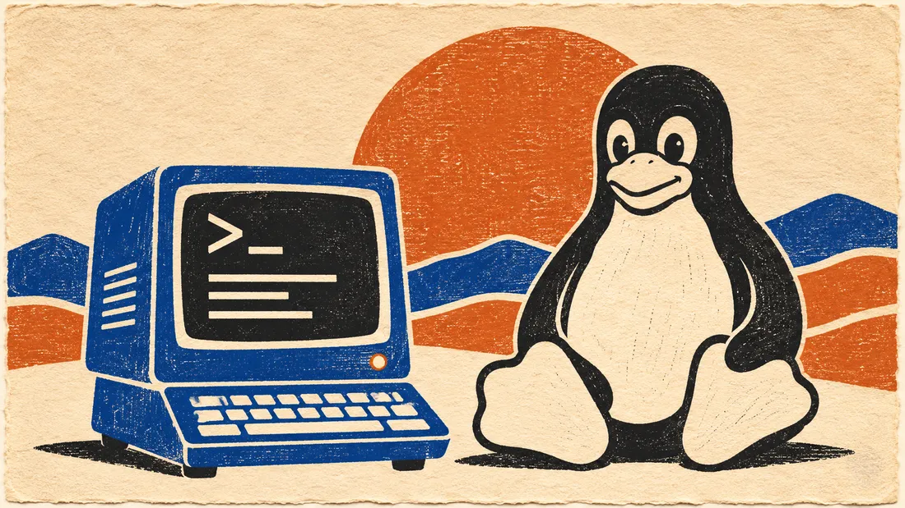

Working on servers and networks taught me to follow a change beyond the machine in front of me. I bring that habit to product security. I trace what a service depends on, what it can access, and what happens when one of those assumptions breaks.
Twin · In development
Which services depend on this change?
I’m building Twin for platform engineers reviewing cloud deployments. The goal is to show which services depend on the resource being changed, so reviewers know what to check before they approve a release.
In one test, changing the source document changed the model’s answer. In another, the assistant retrieved a document containing an instruction. I could verify retrieval, but couldn’t reproduce the suspected exploit. The write-up shows the evidence for each result.
Diagnose Linux servers, verify hardware repairs, and test copper and fiber connections.
Mar 2026 – present Sterling, VA
Google
Data Center Engineer · Contract
Triaged connectivity incidents, deployed Cisco switches, and validated fiber links.
Sep 2025 – Mar 2026 Leesburg, VA
Amazon Web Services
Data Center Engineer · Contract
Isolated server faults, verified repairs, and tracked data-bearing devices through decommissioning.
May 2024 – Aug 2025 Chantilly, VA
ESNEXUS
Cloud Engineer
Automated AWS deployments with Terraform and CloudFormation and maintained delivery pipelines and monitoring.
May 2022 – Feb 2023 McLean, VA
How the infrastructure works
Data center
Power and cooling meet at the rack. A UPS bridges short power interruptions. The rack power distribution unit feeds the servers. Cooling moves heat from the rack exhaust to the facility’s heat-rejection system.
Server hardware
How one host processes a request. The network card transfers incoming data into RAM using DMA over PCIe. The CPU reads and updates working memory. An NVMe SSD provides persistent storage through the PCIe fabric.
Network
How traffic crosses racks. In this example, host A sends traffic to host B in another rack. Its leaf switch selects one spine path. The destination leaf forwards the traffic to host B. A second spine provides an alternate path.

Education
George Mason University B.S. in Information Technology · May 2024